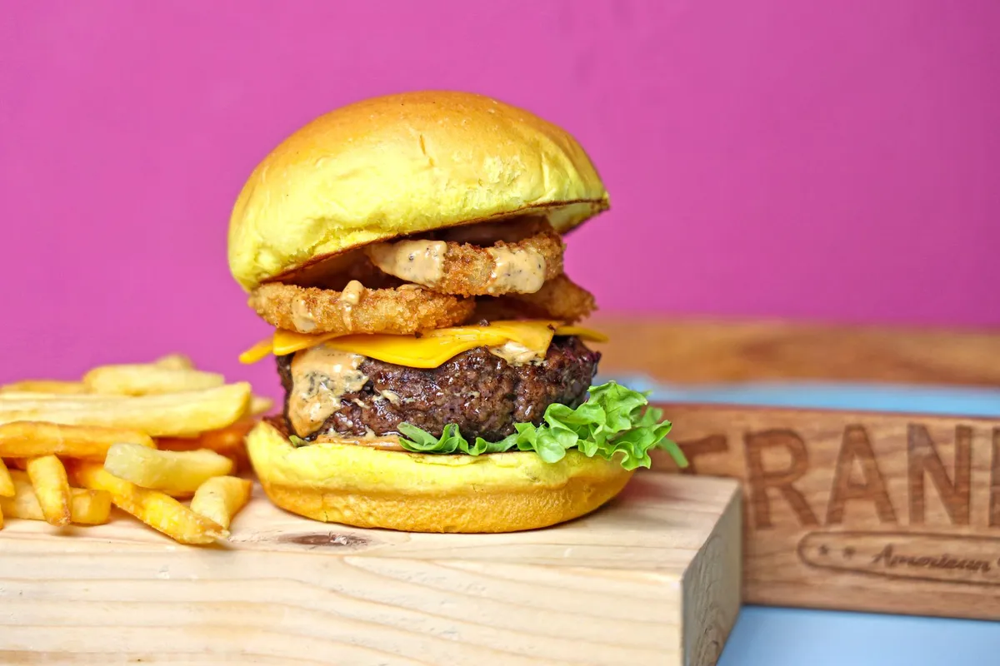

QR Code para cardápio digital: como criar, imprimir e usar

O QR Code do cardápio digital é a ponte mais barata entre o mundo físico e o seu link de pedidos. Um adesivo bem colocado transforma cliente de plataforma em cliente seu.
Como criar o QR Code
- Pegue o link do seu cardápio digital (ex.: seurestaurante.menuzia.com.br).
- Gere o QR Code apontando para esse link.
- Baixe em alta resolução (PNG ou SVG) para não ficar borrado na impressão.
- Teste com dois celulares diferentes antes de mandar imprimir 1.000 unidades.
No Menuzia o QR Code sai pronto junto com o cardápio — nossa equipe entrega o link e o código na configuração.
Onde colar (do que mais converte para o que menos)
- Na embalagem do pedido: o cliente já provou e já gostou. Melhor lugar do mundo.
- Na mesa do salão: pedido sem fila e sem garçom parado esperando.
- No panfleto do bairro: substitui o telefone que ninguém liga mais.
- Na vitrine e no balcão: quem passa na porta salva o link.
O truque: cupom no QR Code
Coloque ao lado do código uma frase simples: "Peça direto no nosso link e ganhe 10% off". É assim que se migra a base de clientes de plataforma para o cardápio próprio, sem brigar com ninguém. O passo a passo completo está em como sair do iFood e vender direto.
Erros comuns
- QR Code pequeno demais (menos de 3 cm) ou impresso com baixo contraste.
- Apontar para a home do site em vez do cardápio.
- Link que muda depois — sempre use um endereço fixo do seu cardápio.
Quer o seu link e o QR Code prontos? Veja o plano de R$67/mês, o cardápio digital para WhatsApp e a página da sua cidade.
Pare de pagar comissão por pedido
Tenha seu cardápio digital próprio por R$67/mês fixo. Nós configuramos pra você e damos todo o suporte técnico.
Criar Meu Cardápio Agora →